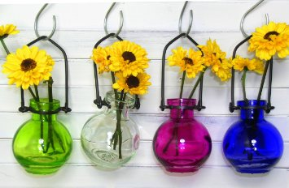
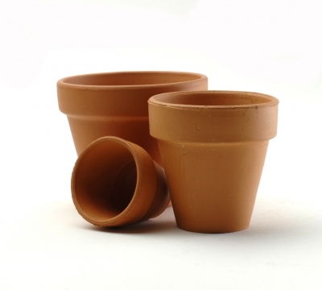
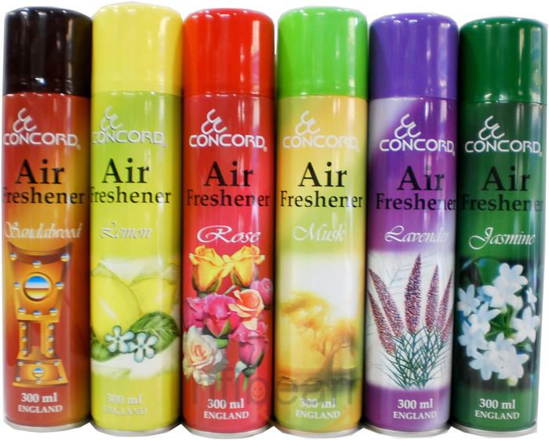

Vases
1:$10 3:$25
These vases are perfect for displaying your beautiful flowers. Coming in an assortment of colors, there is sure to be one that will be one for you. Made from stylish colored glass, these vases will look beautiful inside your house or outside with the included mounting hook.
Terracotta Pots
3 pack:$5
Terracotta pots are great for gardening, given their simplistic and natural look and their cheap price. Another special thing about these pots is that they have an included hole in the bottom of the pot so the soil inside can naturally drain any excess water, preventing overwatering of the plant! These pots can be used for everything from moving soil, transporting plants, or even just displaying some of the beautiful creations that have come out of your garden!
Air Freshener
single:$3 3 packs:$7.50 Variety:$12
Assorted air freshener cans, for when you don't have any fresh flowers to keep your house smelling amazing! These cans use a compressed scented spray to scent the air and surrounding objects with the scent of your choice. Very useful in a home that has animals or many people to keep it smelling fresh.